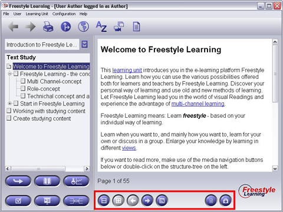

The Interaction Panel contains several buttons which allow you to actively work and interact with the content of the selected element. Some Interaction Buttons will appear in several different Views, some may be unique for a particular View.
